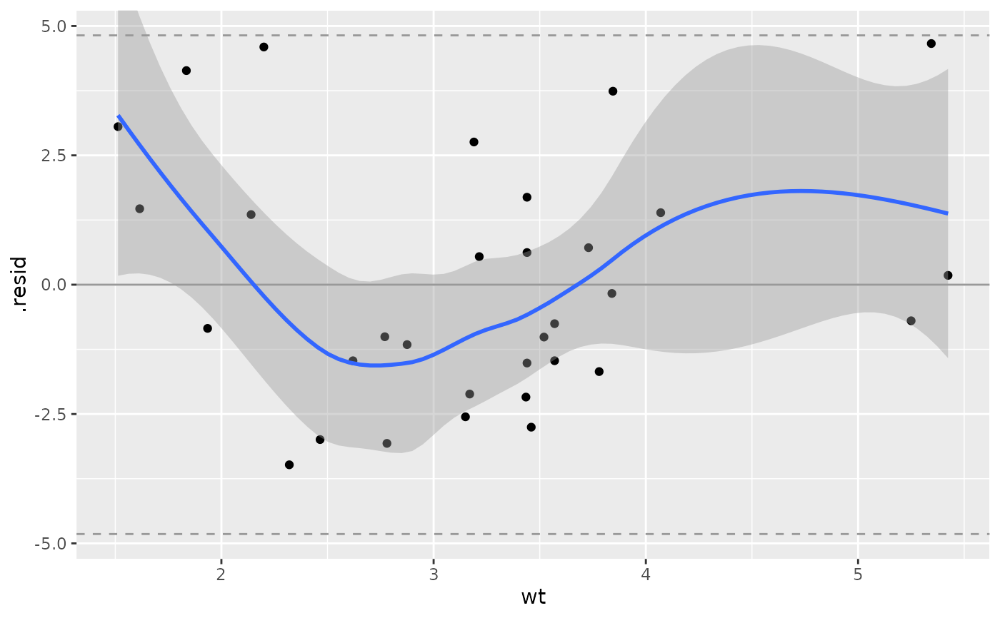

If non-null pVal and sigma values are given, confidence interval lines will be added to the plot at the specified pVal percentiles of a N(0, sigma) distribution.
Usage
ggally_nostic_resid(
data,
mapping,
...,
linePosition = 0,
lineColor = brew_colors("grey"),
lineSize = 0.5,
lineAlpha = 1,
lineType = 1,
lineConfColor = brew_colors("grey"),
lineConfSize = lineSize,
lineConfAlpha = lineAlpha,
lineConfType = 2,
pVal = c(0.025, 0.975),
sigma = attr(data, "broom_glance")$sigma,
se = TRUE,
method = "auto",
formula = y ~ x
)Arguments
- data, mapping, ...
parameters supplied to
ggally_nostic_line- linePosition, lineColor, lineSize, lineAlpha, lineType
parameters supplied to
ggplot2::geom_line()- lineConfColor, lineConfSize, lineConfAlpha, lineConfType
parameters supplied to the confidence interval lines
- pVal
percentiles of a N(0, sigma) distribution to be drawn
- sigma
sigma value for the
pValpercentiles- se
boolean to determine if the confidence intervals should be displayed
- method, formula
parameters supplied to
ggplot2::geom_smooth(). Defaults to"auto"and"y ~ x"
See also
stats::residuals
Examples
# Small function to display plots only if it's interactive
p_ <- GGally::print_if_interactive
dt <- broomify(stats::lm(mpg ~ wt + qsec + am, data = mtcars))
p_(ggally_nostic_resid(dt, ggplot2::aes(wt, .resid)))
#> `geom_smooth()` using method = 'loess'
